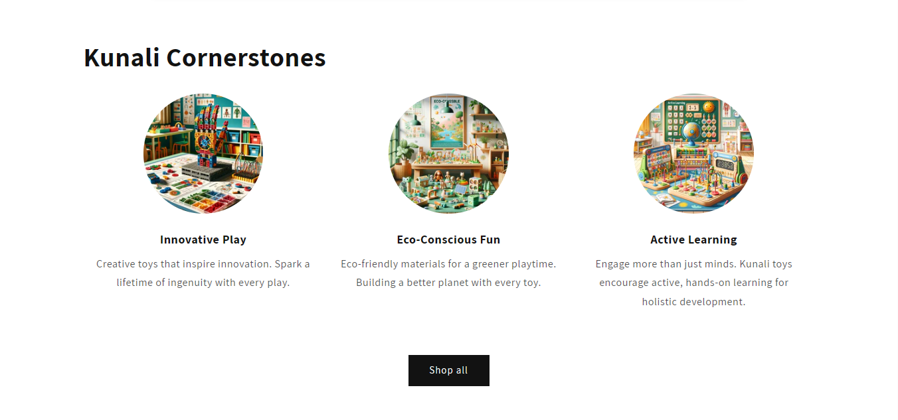

Browse our latest products



Build. Play. Grow.
Where fun meets learning. Ignite curiosity and skills in every child with our dynamic range of educational
toys. Foster imagination and intelligence, one playful moment at a time.
Featured products
Kunali Robotic Hand DIY Fun and Learning kit for Kids 8+ Years
Original Price: Rs. 1199.00
Sale Price: Rs. 899.00
How It Works
Build
Start your journey by building the toy. Follow the intuitive instructions
to assemble the parts.
Play
Once assembled, dive into endless hours of play, exploring various features
of your mechanical toy.
Think Like a Creator
Challenge yourself to understand the mechanics. Innovate and create your
unique modifications.
Explore Our World
Experience the best of our collection!